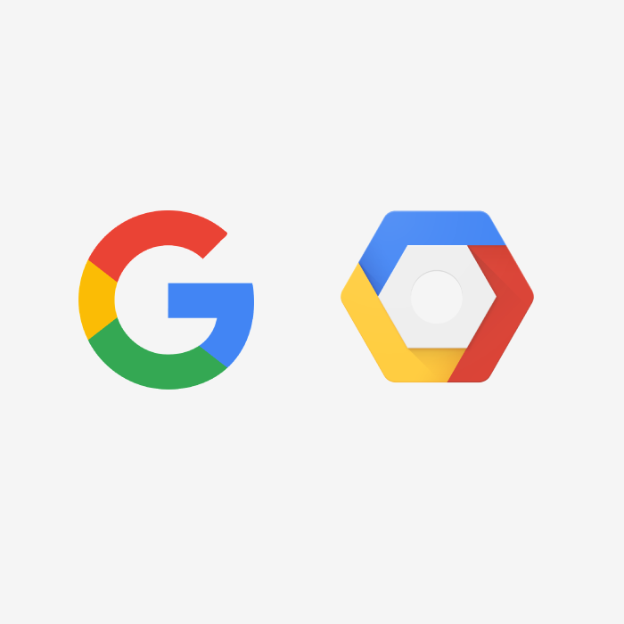
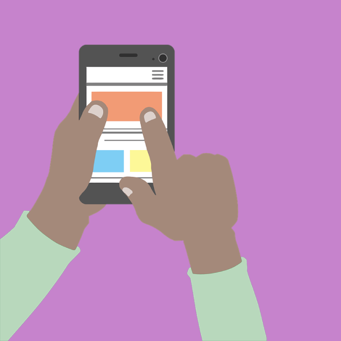
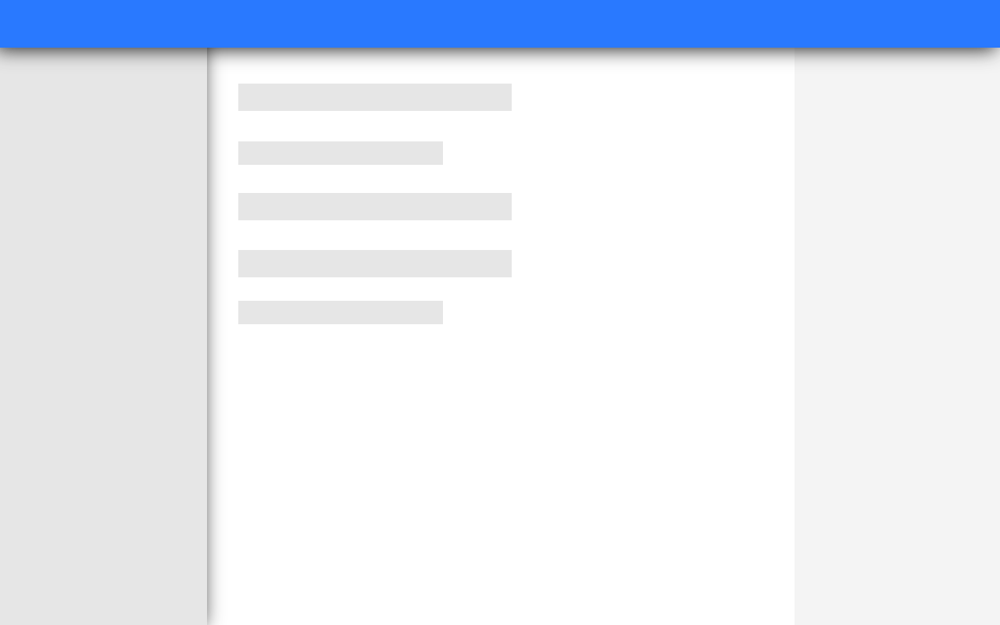
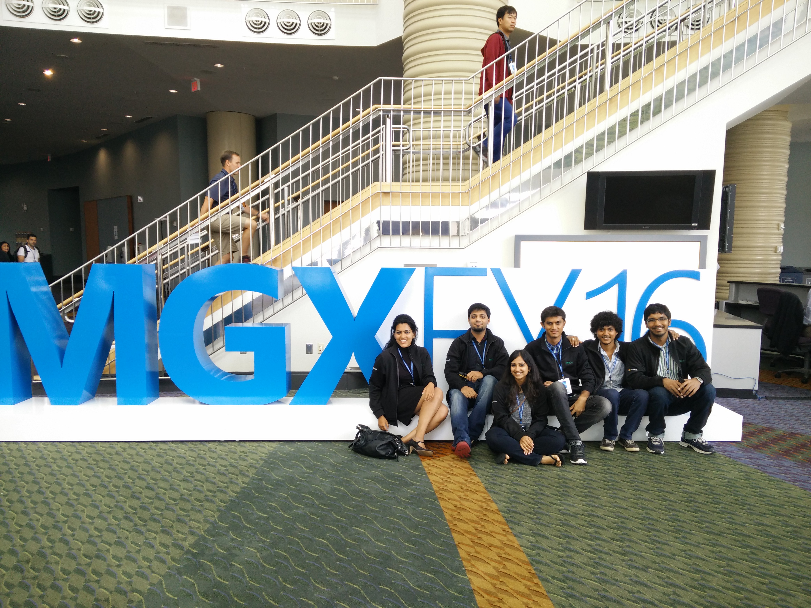

I'm a UX designer and developer pursuing a Master's Degree in Human Computer Interaction at Georgia Institute of Technology.
Currently seeking full time positions starting Summer 2018..
Work & Academic Experience

UX Engineering Summer Internship
May 2017 - August 2017
Master's in Human Computer Interaction
August 2016 - May 2018
Software Engineer
July 2014 - November 2015
Portfolio Projects
Ongoing Projects

Detecting Handedness
August 2017 - May 2018
User Experience Engineering Internship - Google Cloud Platform
May 2017 - August 2017
During the summer I interned in the Cloud UX team at Google Seattle where I worked with UX Designers and Researchers to design and prototype a new feature for the Google Cloud Platform based on research recommendations and input from stakeholders. I collaborated with PMs and Engineers of the GCP teams to plan features and prioritize use cases. I used this input to draw Critical User Journeys and led several design and whiteboarding sessions to optimize and review them, concluding in a design sprint. I Worked with visual designers and component design teams to understand and learn material design guidelines to implement in designs. Worked in Sketch to design 3 versions of the feature and had them reviewed by interaction designers. I built individual prototypes as Proof of concepts using the Polymer framework and Paper - web components and worked with UX engineers to build a full working Minimum Viable Product Prototype for the full feature. Finally, I conducted a cognitive walkthrough to evaluate the prototype. The feature is now under development for V1.

Masters in Human Computer Interaction
August 2016 - May 2018
I'm currently pursuing my masters degree in Human Computer Interaction in the Interactive Computing track at Georgia Tech. The program includes courses in Psychology, Design and Digital Media in addition to Computer Science where I learn UX research methods, user centered design and prototyping in both software and hardware focusing on a complete end to end user centered development process. Some of my projects that showcase this complete process are Humans vs Zombies and HandWhich. In addition to these some of the projects that I have worked on are design or development focused: HellWorld. Some of the work I've been doing was also in collaboration with the Data Visualization labs and the Mobile and Ubiquitous computing labs.
Software Engineer at Microsoft
July 2014 - October 2015
I worked as a software engineer in the Microsoft IT division in India which is a part of the SMSG group. My project involved working with a Master Data Management system where I exposed WCF and Azure Rest Services to and from the system that stores volumes of personally identifiable information of organizations that hold volume licenses of Microsoft Products. I developed services for data manipulation operations for bulk and single requests. A second project I worked on was to analyze and evaluate the benefits of upgrading a data standardization and cleansing module to ensure data quality from in-stream systems. While working at Microsoft, I completed the certification course "Developing Microsoft Azure Solutions". I also got the chance to participate in the annual Microsoft Global Exchange conference.

Detecting Handedness - HCI thesis
August 2017 - May 2018
Before the introduction of phablets, foot scale devices and other mobile devices larger than 4 inches, mobile devices were more conducive to one handed usage. Mobile touchscreens were accessible using the thumb when being held with four fingers. The thumb could be used to operate the device. At this size, most parts of the touchscreen were still reachable. People often use mobile devices with one hand either because they have been conditioned to do so after years of handling smaller devices or because they are operating the device while performing another activity such as carrying objects, jogging and occasionally driving. The current trend in increasing screen sizes of mobile devices has led to a limited functionality of applications using one hand. Many parts of the touchscreen like the upper corners are not accessible with just the thumb requiring users to use both hands. Similarly, the bottom corner of the screen covered by a portion of the hand holding the phone is difficult to access. With current competitive trends, screen sizes do not seem to be decreasing so the solution to this problem doesn't revolve around creating smaller devices to use with one hand. Therefore, the best solution would be to design a user experience that is suitable for both one handed usage as well as two handed usage of the device. This project focuses on designing a better experience for single handed use.
Check in for more updates.